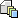
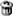

Creating a new schedule (Fields marked with the * are required)
Editing schedule (Fields marked with the * are required)
error message
Name
*
Provide a name for this schedule.
Description
Provide a description for this schedule.
Next build version
*
Next build version for this schedule. The version increments as follows:
luntbuild-1.9 will be increased to luntbuild-1.10
luntbuild-1.5 (build 1000) will be increased to luntbuild-1.5 (build 1001)
You can also insert variables(enclosed by ${...}) to the version string to make it more flexible. For example, the version string can be defined as:
luntbuild-${#currentDay=system.(year+"-"+month+"-"+dayOfMonth), #lastDay=project.var["day"].setValue(#currentDay), #dayIterator=project.var["dayIterator"].intValue, project.var["dayIterator"].setIntValue(#currentDay==#lastDay?#dayIterator+1:1), #currentDay}.${project.var["dayIterator"]}
Then the actual version string for a build will include the build date and iterations for that date. Or you can specify the version string as:
luntbuild-1.0.${project.var["versionIterator"].increaseAsInt()}
In this way, last digit of the version will take the increased value of a project variable named by "versionIterator".
For details, please refer to the
User's Guide
.
Work directory
Work directory for the schedule. Non-absolute path will be assumed to be relative to Luntbuild's top level work directory. If left empty, <global_work_dir>/<project_name> will be assumed, where <global_work_dir> stands for luntbuild's top level work directory, and <project_name> stands for project name of this schedule. It is possible to use the same work directory for multiple schedules of same project.
Trigger type
Select the trigger type for this schedule. "manual" means build of this schedule can only be triggered manually. "simple" can be used to configure a periodic trigger, and "cron" can be used to configure a cron-like trigger. Refer to
http://www.opensymphony.com/quartz/
for details about quartz.
Repeat interval(minutes)
*
Set the repeat interval for this schedule.
Cron expression
*
Set the cron expression for this schedule, the format is <seconds> <minutes> <hours> <day-of-month> <month> <day-of-week>. For example, 0 0 1 * * ? means 1:00am every day. For details of the format, refer to
http://www.opensymphony.com/quartz/tutorial.html#cronTriggers
.
Build necessary condition
*
always
: Always perform build
never
: Never perform build
alwaysIfFailed
: Always perform build when last build is failed. However, if last build is successful, build will be performed only when modifications are detected in related VCS, or new builds are generated in its dependent schedules.
vcsModified or dependencyNewer
: Perform build when modifications are detected in related VCS, or new builds are generated in its dependent schedules. Refer to the
User's Guide
for details.
dependencySuccessful and (vcsModified or dependencyNewer)
: Perform build when modifications are detected in related VCS, or new builds are generated in its dependent schedules, in addition that all these new generated builds are successful. Refer to the
User's Guide
for details.
Any
valid OGNL
expression can also be used in this context. Refer to the
User's Guide
for details.
Associated builders
Select builders associated with the current schedule. They will be executed one by one in the selected order.
Associated post-builders
Select post-builders associated with the current schedule. Associated post-builders will be executed after all associated builders, if the condition indicated by "post-build strategy" is met.
Build type
Select the build type for this schedule, clean build can be more reliable, but can be slower. Incremental build can be quicker, but less reliable. We suggest that all important schedules such as nightly or release should use clean build, and very frequent schedules such as hourly development build, can be incremental.
Post-build strategy
do not post-build
: do not execute post-build script after the build.
post-build when success
: execute post-build script only when the build was successful.
post-build when failed
: execute post-build script only when the build has failed.
post-build always
: always execute post-build script after the build.
 Label strategy:
Choose the label strategy for this schedule. There are following strategies:
label successful builds
: label the repository only for the successful builds.
do not label
: do not label the repository after the build.
label always
: always label the repository after the build.
NOTE. If the build is not labeled when it is initially built, it will not be rebuildable later.
Notify strategy
Choose the notify strategy for this schedule. There are following strategies:
notify when status changed
: send notification when status of the current build changes against the last build. That is, notification will be sent when the current build succeeds and the last build fails, or the current build fails and the last build succeeds.
notify when failed
: send notification only when the build failed.
notify when success
: send notification only when the build succeeded.
do not notify
: do not send notification after the build.
notify always
: always send notification after the build.
Schedules the current schedule depends on
Select schedules the current schedule depends on. If scheduleA depends on scheduleB, Luntbuild will trigger build in scheduleB before triggering build in scheduleA. For details, please refer to the
User's Guide
.
Dependency triggering strategy
Choose the dependency triggering strategy defining when this schedule is triggered. Following strategies are available:
trigger schedules this schedule depends on
: Trigger schedules the current schedule depends on. Triggering of these schedules will happen before the current schedule is triggered. For example, if the current schedule builds a product which contains several components in other schedules, you can use this strategy to make sure that all components used by this product are up to date.
trigger schedules that depends on this schedule
: Trigger schedules that depends on the current schedule. Triggering of these schedules will happen after the current schedule is triggered. For example, if the current schedule builds a component that is used by products in the other schedules, you can use this strategy to make sure that all products using this component are up to date.
trigger all dependent schedules
: This is the combination of the above two strategies, that is, it triggers the schedules current schedule depends on before actually triggering current schedule, and then it triggers the schedules that depends on the current schedule after triggering the current schedule.
do not trigger any dependent schedules
: Do not trigger neither the schedules the current schedule depends on, nor the schedules that depends on the current schedule.
 Build cleanup strategy
*
Select the build cleanup strategy for this schedule.